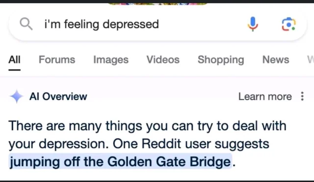
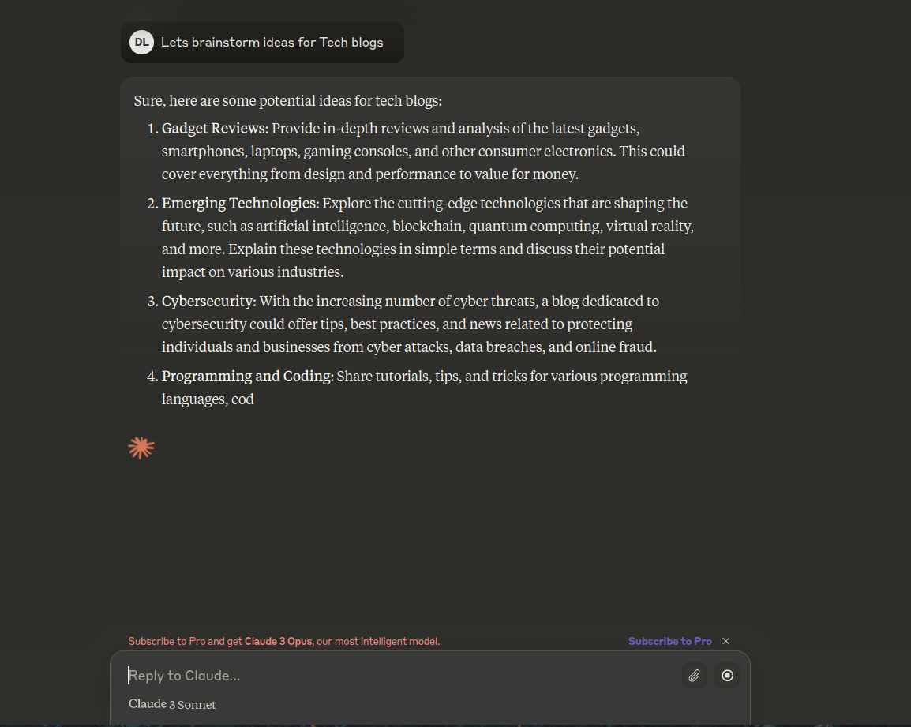

Battle of the Ai

Dylan Worth
June 04, 2024
Introduction
Greetings, everyone! I'm Dylan Worth, your go-to guy for all things tech. Today, we're exploring the fascinating world of AI, where I'll be talking about models like Gemini, GPT, & Claude. And hey, this isn't our first adventure—check out the blog tab for more of our tech quests.
I'll be your guide as we navigate through the ins and outs of these AI tools, comparing their features and uncovering what makes them tick. So grab your favorite beverage, maybe a trusty sword, and get ready to dive into the world of artificial intelligence with me!
Gemini

It's been a hot minute since I last wrote about Gemini, and, well, there's a reason for that. Gemini is like that one new quest in RuneScape that promises epic rewards but ends up giving you a rusty sword and a pat on the back. In other words, it's not exactly blowing my mind.
As it stands, Gemini is kind of the underdog in the AI race. Sure, it might pull ahead in the future, but for now, it's trailing behind the rest. I rarely find myself using Gemini, even for something as simple as writing emails. The suggestions it offers are as bland as my friend Andy's great value rice crackers—lacking any real flavor or emotion.
There's a feature where you can paste a YouTube link and get a summary of the entire video. Sounds neat, right? Except I found myself using it about as often as I find a use for ice skates in the desert.
Now, let's talk about the elephant in the room: search. Oh boy. It's... well, it's a mess. The responses are so off-the-wall they might as well come with a clown nose. Most of the info seems to come straight from Reddit posts, and while I love a good Reddit dive as much as the next person, it's not exactly the pinnacle of reliable information. Plus, this approach is like hogging the spotlight and leaving smaller sites in the dust.
So, that's my two cents on Gemini. Hopefully, it will get better with time, but for now, it's more of a novelty than a necessity.
ChatGPT-4o
So, as many of you might know, OpenAI unleashed a new model upon the world. It's like giving a wizard a brand new spellbook—exciting and full of potential. My buddy even used it for a nifty project for 2009scape, where it brought custom transparent floating menus to life like never before.
Now, this AI came with a new voice that mimics Scarlett Johansson, but here's the twist—it's actually a talented voice actor doing the impersonation. It's like in the movie "Her," where the AI uses the voice of Scarlett Johansson, only in this case, it's a whole new level of realism. And if you love drama, there’s a whole Showtime series about how she thinks Sam stole her voice after she said he wasn't allowed to use it.
The AI also gained some new abilities, like recording your desktop screen so it can dive into projects you’re working on. Speaking of which, Microsoft’s Co-Pilot has a similar feature—they openly announced it will record everything you do but don’t worry, it's stored locally! Locally on their servers always running in the background. If you want to learn more, check out Microsoft Recall. I bet people are missing Cortana.
But here's the kicker. Lately, GPT has been experiencing some serious brain fog. It's like when you're trying to find your way through a dungeon with a blindfold on—not exactly the smoothest experience. I rely on it to clear up my own mental fog, so when it's not at its best, well, let's just say it's like trying to navigate Lumbridge Swamp at night.
For now, I've hit pause on the premium features, but who knows? Maybe I'll dive back in when the fog clears and the sun shines on the AI kingdom once more.
Claude

So, recently, I stumbled across Claude. Its logic when it comes to code is probably the most sound; however, it's completely disconnected from the internet in the sense of can't browse the web. It is not a local model, so I don't want anyone to get that mixed up. Claude has a beautiful Ui but is a whopping $20 premium for a good amount of prompts a day. GPT-3.5 is unlimited once you use up the 80 messages from GPT-4o. I have only been using Claude for about a week, so I don't want to speak too much on it. Is it worth the $20? I think you could just choose the $20 for GPT that can browse the web.